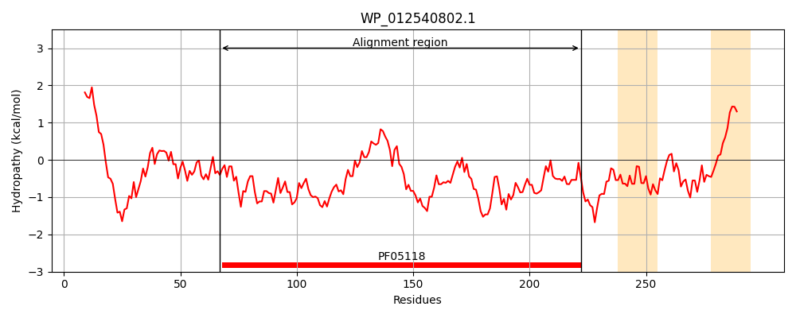
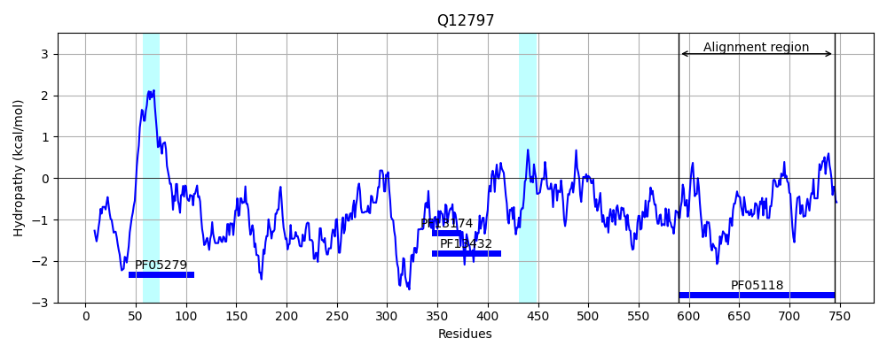
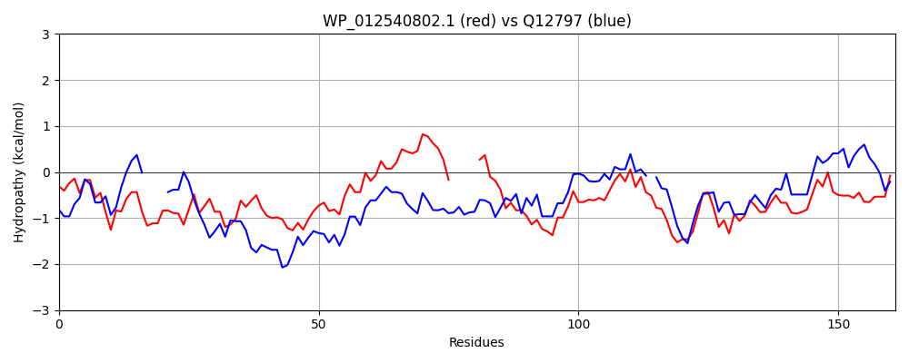

Hit Accession: Q12797
Hit TCID: 8.A.28.1.5
Hit Description: gnl|BL_ORD_ID|12638 gnl|TC-DB|Q12797|8.A.28.1.5 Aspartyl/asparaginyl beta-hydroxylase OS=Homo sapiens GN=ASPH PE=1 SV=3
Mach Len: 161
e:0.000000
Query TMS Count : 2
Hit TMS Count: 2
TMS-Overlap Score: 0.000000
Predicted Substrates:None
BLAST Alignment:
Score: 159 , Bit scores: 65 bits, E-value: 5.0e-12, Alignment length: 161, Percentage identity: 27
Query: 67 LQQNWQVIRDEGLHLQQLEQIKAADKYNDAGFNSFFKTGWKRFYLKWYEEAHPSASQLCPHTTALLRDIPSVKAAM-----FATLPDGSRLPRHRDPYAGSLRFHLGLATPNDDRCFIEVDGQRYSWRDGEGVLFDETYIHYAENTSGENRLILFCDIERP 222
L++NW++IRDEGL + KA + N K W +F L + +A + P T LL P ++ + G+ + H P LR HLGL P + C I + +W +G+ ++FD+++ H + RLI D+ P
Sbjct: 590 LERNWKLIRDEGLAVMD----KAKGLFLPEDENLREKGDWSQFTLWQQGRRNENACKGAPKTCTLLEKFPETTGCRRGQIKYSIMHPGTHVWPHTGPTNCRLRMHLGLVIPKEG-CKIRCANETKTWEEGKVLIFDDSFEHEVWQDASSFRLIFIVDVWHP 745 | Protein Hydropathy Plots: |
|---|
|  |  |
Pairwise Alignment-Hydropathy Plot:
|
|---|
|  |